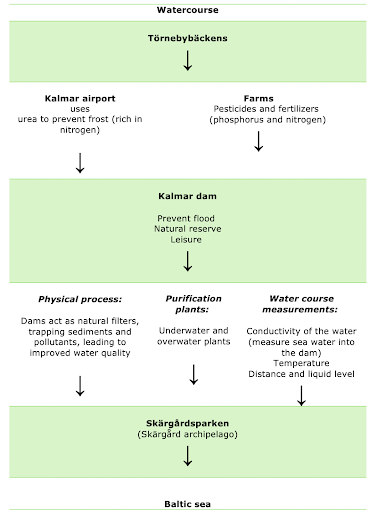

Introduction
Discover the transformative role of Kalmar Dam, an artificial wetland with a sustainable mission. Learn how this innovative solution plays a crucial role in reducing the environmental impact of chemicals used at the Kalmar airport and surrounding farms, and diminish the risk of floods. By creating a new ecosystem for both flora and fauna, Kalmar Dam contributes significantly to keeping the Baltic clean. Delve deeper into the workings of this extraordinary dam and explore its mission to foster sustainability.
The Challenge
Kalmar airport relies on Urea, a nitrogen-rich chemical essential for preventing ice on runways. Additionally, nearby farms use fertilizers containing phosphorus and nitrogen. As a result, water runoff carries an influx of minerals and nutrients, setting the stage for eutrophication in the Törnebybäcken water course and ultimately to the Baltic Sea.
Understanding Eutrophication
The Process
Eutrophication begins with the enrichment of the lake water, leading to increased phytoplankton productivity. This process, known as Algae Blooms, sets off a chain reaction. Bacteria decompose the algae, consuming oxygen and releasing carbon dioxide. The decline in oxygen levels results in the death of aquatic life and plants. As organic material accumulates, the lake's health deteriorates.
Kalmar Dam's Solution
Kalmar Dam plays a pivotal role in preventing the harmful effects of eutrophication. The dam's water flows through five monitored sections equipped with different types of sensors. These sensors, integrated into the Internet of Things (IoT) and connected to the Helium network, provide real-time data for early detection of eutrophication.
Welcome to GeoMap!
Explore the geographic map evolving over time, showcasing data from 9 sensors strategically placed across the wetlands to monitor crucial parameters such as water depth, temperature and conductivity.
Detail of the istance sensor LDDS75
Conductivity (µSiemens/cm"), Water depth (cm) and Temperature (°C) .
Monitoring Conductivity
Experience the visualization of four variables evolving over time in our interactive diagram. This diagram illustrates the intricate relationships between Conductivity, Water depth, and Temperature as they fluctuate over time.
Press PLAY to witness the dynamic changes in the values of Conductivity, Water depth, and Temperature over time. See the details by interacting with the diagram:
- Conductivity is mapped on the x-axis (horizontal axis).
- Water depth is represented on the y-axis (vertical axis).
- Temperature is indicated by the size and color of each circle.
Unlock Insights:
The interactive diagram provides insights into temporal trends and correlations between these key variables. Move your cursor over the circles to view specific values or pause the animation at any time by clicking the PAUSE button.
Interactive Sensor Visualization:
Interact with the map to view sensor data over time. Hover your cursor over each circle to reveal detailed parameter values. You have the flexibility to pause the animation at any time by clicking the PAUSE button.
The watercourse
